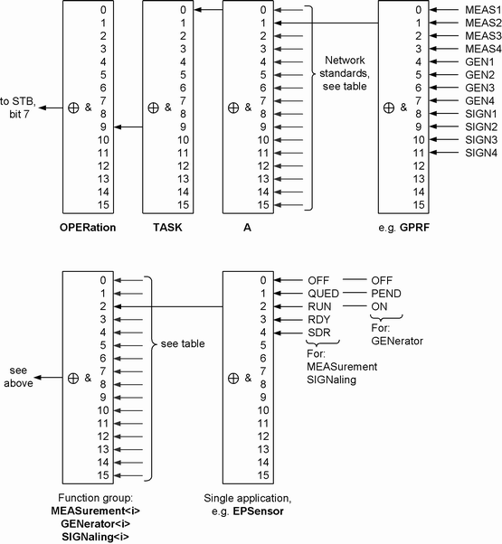
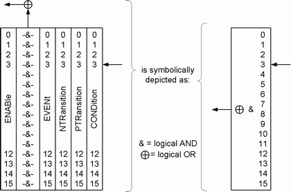

The STATus:OPERation register provides an overview of state transitions of the tasks (e.g. GPRF:MEASurement1:POWer) by collecting the information of lower registers. The STATus:OPERation register hierarchy is shown below. The paths can also be queried via remote command, see
The figure and the remainder of this section describe the complete hierarchy supported by the software. Depending on the instrument model, not all applications are relevant. |

Each single status register in the figure above consists of five parts as described in section "Structure of an SCPI Status Register". The following simplified presentation is used:

The following table lists the bits of the register STATus:OPERation:TASK:A. The network standard mnemonics are identical to the mnemonics used in remote commands. Depending on the instrument model and the installed applications, only a subset is relevant for you.
Bit No. | Network standard |
|---|---|
1 | GPRF |
2 | GSM |
3 | WCDMa |
4 | WLAN |
5 | BLUetooth |
7 | EVDO |
8 | CDMA |
9 | TDSCdma |
10 | LTE |
11 | AUDio |
12 | DATA |
The following table lists the assignment of the individual applications to the bits of a function group register (STATus:OPERation:TASK:A:<network standard>:MEASurement<i> / ...:SIGNaling<i> / ...:GENerator<i>).
The mnemonics are as far as possible identical to the mnemonics used in remote commands. UNIVersal is used if the application is not explicitly identified in remote commands (e.g. STATus:OPERation:TASK:A:GPRF:GENerator1:UNIVersal).
Depending on the instrument model and the installed applications, only a subset of the mnemonics is relevant for you.
Bit no. | Measurement | Signaling | Generator |
|---|---|---|---|
0 | POWer, MEValuation, PING, ANALog | BERCswitched, BER, PER, TDATa, EBLer | UNIVersal |
1 | IQVSlot, PRACh, IPERf, TPC, OLTR, DIGital | THRoughput, BERPswitched, HACK | - |
2 | EPSensor, SRS, THRoughput | BLER, EHICh | - |
3 | IQRecorder | THRoughput | - |
4 | FFTSanalyzer | ULLogging | ANALog |
5 | SPECtrum | - | DIGital |
The status registers at the lowest level indicate state transitions to the following states:
Bit no. | Measurement / signaling state | Generator state |
|---|---|---|
0 | OFF | OFF |
1 | QUED (queued) | PEND (pending) |
2 | RUN (running) | ON |
3 | RDY (ready) | not used |
4 | SDR (statistical depth reached) | not used |
- STATus:OPERation:TASK:A:ENABle etc.
- STATus:OPERation:TASK:A:ESRQ etc.
- STATus:OPERation:TASK:A:NTRansition etc.
- STATus:OPERation:TASK:A:PTRansition etc.
- STATus:OPERation:TASK:A:GPRF:GENerator1:UNIVersal:CONDition? etc.
- STATus:OPERation:TASK:A:GPRF:GENerator2:UNIVersal:EVENt? etc.
- STATus:OPERation:TASK:A:GPRF:GENerator1:UNIVersal:WCONdition? etc.
- STATus:OPERation:TASK:A:GPRF:GENerator2:UNIVersal:WEVent? etc.
- ...:XENable, ...:XESRq, ...:XNTRansition, ...:XPTRansition
- ...:XCONdition, ...:XEVent
- ...:XWCondition, ...:XWEVent
- STATus:CONDition:BITS:ALL?
- STATus:EVENt:BITS:ALL?
- STATus:MEASurement:CONDition:RDY? etc.